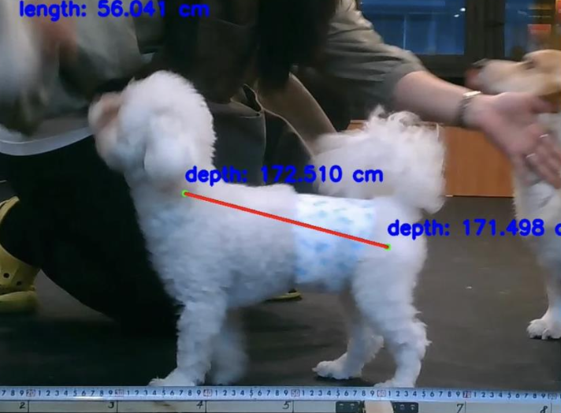
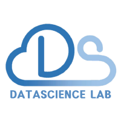

|
Chaemin Hwang
I am an undergraduate student at
Yonsei University,
majoring in Sociology with a minor in
Applied Statistics.
My research goal is to leverage AI to address real-world social challenges.
I'm also interested in personalization, particularly in developing eXplainable AI systems that can earn public
trust and ensure transparency in decision-making.
Email /
CV /
Github
|
|
Education
Yonsei University, Seoul, Republic of Korea
B.A. in Sociology with a Minor in Applied Statistics (GPA: 3.89 / 4.30)
Mar. 2021 – Feb. 2026
|
Research Experience
EDGE AI Lab, led by Prof. Dongjun Han, Yonsei University
Aug. 2025 - Nov. 2025
Topic: Personaliztion with Federated Domain Generalization
Social Networks & Neuroscience Lab, led by Prof. Yoosik Youm, Yonsei University
Jan. 2023 - Jul. 2023
Topic: Research on Adolescents’ Social Relationships and Mental Health
|
Projects
|

|
Monocular Dog Body Length Estimation
This work is part of 24-2 Yonsei DSL Corporate Project supported by PetNow, Seoul AI Hub, and advised by Prof. Taeyoung Park.
Improving a dog body length estimation model. Based on pose estimation and depth estimation models, we improve 2d-to-3d transformation with camera intrinsic parameters.
Due to security issues, the materials cannot be disclosed.
|
|

|
Audio Sentiment Classification
This work is part of 24-1 Yonsei DSL Corporate Project supported by WesomE.
Developing a lightweight model (under 500MB) for recognizing emotions from speaker's voice data, focusing on feature augmentation through analyzing high-frequency details.
Due to security issues, the materials cannot be disclosed.
|

|
NextLevel: A Choreography Generation Model with Lyric Understanding
This work is part of 23-2 Software Project (IIT4204) with Jaeho Jin, Sangjoon Yeo, and advised by Prof. JeongGil Ko.
Integrating lyric understanding into group choreography generation model.
By incorporating text embedding into previous diffusion-based models, we generate lyric-aware dance motions.
Our materials aren't disclosed now.
|

|
Medical Image Super Resolution
Implementation of Low-Dose CT with a Residual Encoder-Decoder Convolutional Neural Network.
This work is a part of the internship in Medisys Lab, advised by Prof. Jongduk Baek.
The research focus on enhancing low-dose CT images by super-resolving them to match the quality of normal-dose images.
Additionally, as a follow-up study, we replaced the architecture with a U-Net to further evaluate the effectiveness in preserving details.
Our code is available here.
|
|
Honors and Awards
Mentoring Scholarship, Lotte Foundation
Math mentoring volunteering for middle school students at local children's center (2022.09. ~ 2025.02)
Certification, 5th LG Aimers/Data Intelligence
LG Aimers (Advancing AI for Young Talents): Online AI Education and Hackaton (2024.08. ~ 2024.09.) held by LG AI Research.
Topic: Developing a product defect detection model based on Process Data
CLIO Social Data Science Development Scholarship
A scholarship given to motivate and encourage learning in the field of social data science (2023.05)
|
Miscellanea
Yonsei Data ScienceLab
11th Regular Member (Dec. 2023 - Dec. 2024)
Yonsei Data Science Lab (DSL) is a student community under the Department of Applied Statistics at Yonsei University, advised by Prof. Taeyoung Park.
Yonsei DSL focus on studying and applying various theories related to Data Science and Machine Learning, based on a statistical theory.
논문 스터디
11th Regular Member (Dec. 2023 - Dec. 2024)
Yonsei Data Science Lab (DSL) is a student community under the Department of Applied Statistics at Yonsei University, advised by Prof. Taeyoung Park.
Yonsei DSL focus on studying and applying various theories related to Data Science and Machine Learning, based on a statistical theory.
|
|
Last updated on Nov 24, 2025.
© 2025 Chaemin Hwang. All rights reserved. Design and source code adapted from
Jon Barron's website.
|
|
{kind=link}